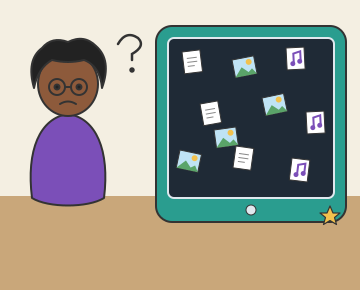

Files and folders
Learn with an AI tutor
An AI tutor explains this page to you and helps you with the exercises. Choose your assistant:
Open with Claude Open with ChatGPT Open with Mistral Vibe
You use your own account with the provider. The assistant is not offered by lernapps.net: lernapps only provides the content and the exercises. The choice holds for all pages, on this device only.
Where is Mia's talk?

© CC-BY-4.0Mia's tablet. Everything is mixed up.
Yesterday Mia wrote her talk for German and saved it. Today she cannot find it. There are 40 files on her tablet: photos, songs, texts.
On this page you will learn how to store files so that you can find them again. For this you need the tree that you already know.
Exercise
Solution
She puts her files into folders by their kind, for example a folder for school. right answer
Then she knows where to look, even a year from now.
She looks under “Recent”.
That only helps today. “Recent” is a list of the last files, not a place. The file is stored somewhere else, and next week it will be gone from the list.
She saves the talk again, then it is sure to be there.
It is already saved. The question is where. A file often ends up in the folder “Downloads”.
Folders give every file a fixed place. If something has a place, you can find it again.
Mia's folder tree
Mia tidies up. After that, her tablet looks like a tree in computer science: at the top is the root, which is the tablet itself. Below it are the folders, which are nodes. At the very bottom are the files, which are the leaves with a dashed border.
- file
A file is a stored piece of data with a name, for example a photo, a song or a text.
- folder
A folder is a place for files and for more folders. It has a name too.
Mia's folder tree. At the top is the root “Mia's tablet”. Below it are three folders: School, Photos and Music. In the folder School there is talk.txt. In the folder Photos there are lake.jpg and party.jpg. In the folder Music there is song.mp3. The files at the very bottom have a dashed border.
- file extension
The extension comes at the end of the file name, after the dot. It shows the kind of file, for example .jpg for a photo, .mp3 for something to listen to, .txt for a text.
Remember
A folder can hold files and folders. A file holds no folder, it is a leaf. If you delete a folder, you also delete everything in it. And a new name does not turn a photo into a different photo: what is in it stays the same.
Tidying up in the file manager
On the tablet you never see the whole tree. A file manager only ever shows one folder. This is how you use it:
- Tap a folder and it opens. At the top it says where you are.
- “Up” takes you back one folder.
- “Cut” takes a file away. Then open the folder where it should go and tap “Paste”. Cut and paste together mean: move.
New files often end up in the folder “Downloads”. Take the new file out of there and put it into a folder that fits. Then press “Check”.
Task no. 1
Task no. 1
New in Downloads: cake.jpg. Put the file into a folder that fits.
Solution
cake.jpg → Mia's tablet/Photos
Try it without a tablet
Your school bag is a tree too. Draw it: at the top the bag as the root, below it the folders and pockets as folders, at the bottom the exercise books and sheets. Where is your homework book? Can the person next to you find it in ten seconds with your tree?
Practice
Exercise
Three worked tasks, each with its solution:
Task no. 1
Mia's tablet is tidy, like in the folder tree above. Mia is looking for a file with the extension .jpg. Which folder does she look in?
Hint
What kind of file is it? A text for school, a photo or something to listen to?
Solution
- Mia is looking for a file with the extension .jpg. That belongs in the folder Photos.
Right answer: Photos
Task no. 2
Mia's tablet is tidy, like in the folder tree above. Mia is looking for the photo of the cake. Which folder does she look in?
Hint
What kind of file is it? A text for school, a photo or something to listen to?
Solution
- Mia is looking for the photo of the cake. That belongs in the folder Photos.
Right answer: Photos
Task no. 3
Mia's tablet is tidy, like in the folder tree above. Mia is looking for the song from the school party. Which folder does she look in?
Hint
What kind of file is it? A text for school, a photo or something to listen to?
Solution
- Mia is looking for the song from the school party. That belongs in the folder Music.
Right answer: Music
Exercise
Solution
Right answer: 2
In the folder Photos there are two files, lake.jpg and party.jpg. Both are gone with the folder.
Exercise
Solution
Right answer: The statement is false.
The name is like a label on the file. A new label does not change what is in the file. The extension .jpg stays, it is the same photo.
Exercise
Solution
a file right answer
Yes, that is what folders are for.
another folder right answer
Yes, for example a folder German inside the folder School. In the tree, one node then hangs below another node.
the whole tablet
The tablet is the root. All folders are inside it, not the other way round.
the root of the tree
The root is at the very top. It is not inside any folder.
A folder can hold files and more folders. The tablet itself is the root above everything.
Mia's tablet is tidy. Every file has its folder. Then Selin writes: “Send me the photo of the lake!” On the next page Mia describes exactly where it is.
Found a mistake or have an idea for this app?